Префектура Миэ · Исэ · святилища
Святилище Исэ: путеводитель по главному святилищу Японии, от мифа до поклона
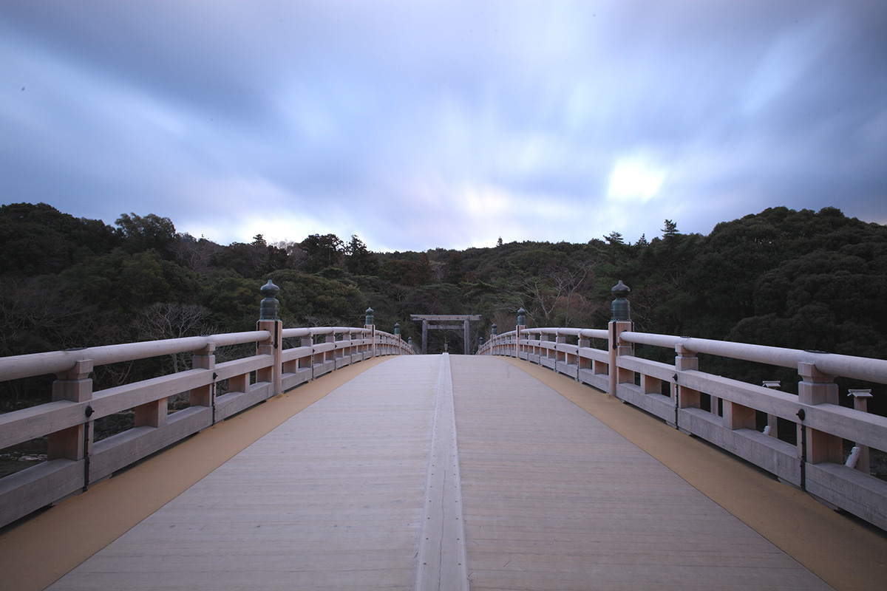
Каждый год, а особенно на Новый год, в святилище Исэ приезжают миллионы людей, но мало кто из них знает, почему оно стоит именно здесь и как в нём положено молиться. Мы собрали всё, что стоит знать до поездки: историю из древних хроник, ответы на частые вопросы и места, мимо которых легко пройти.
Миф
Почему Аматэрасу живёт в Исэ
Святилище Исэ, или Исэ-дзингу, считается главным среди всех синтоистских святилищ страны. Его история начинается не в Исэ, а при императорском дворе. Когда-то богиню солнца Аматэрасу-омиками почитали прямо во дворце, вместе с богом Омононуси.
Как рассказывает «Кодзики», древнейшая японская хроника, при императоре Судзине страну охватил мор. Судзин по традиционному списку десятый император, считая от основателя страны Дзимму; это фигура полулегендарная. Растерянный правитель обратился к богам, и Омононуси ответил: пусть его почитает собственный потомок бога. Император разыскал этого человека и перенёс почитание Омононуси из дворца на гору Мива. Мор сразу прекратился. Считается, что так боги напоминают о себе, когда обряды забывают, например при смене власти.
Тогда же переехала и Аматэрасу. Император поручил своей дочери Тоёсуки-ирихимэ перенести почитание богини в деревню Касануи в краю Ямато. Следующий правитель, император Суйнин, велел найти для Аматэрасу самое достойное место. Эта задача досталась принцессе Ямато-химэ.
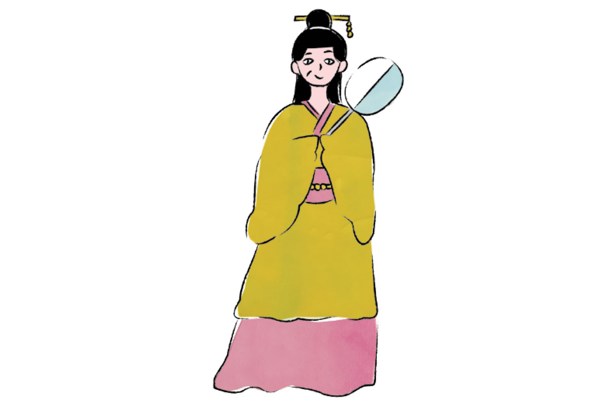
Ямато-химэ покинула Касануи и долгие годы переходила с места на место, прежде чем нашла то самое. Её путь шёл через земли нынешних префектур Нара, Сига, Гифу и Миэ, и в некоторых местах до сих пор сохранилось название «Мото-Исэ», «прежний Исэ»: там богиню почитали временно. Другая хроника, «Нихон сёки», говорит, что в Исэ Аматэрасу очень понравилось верховье реки Исудзу в Удзи, и богиня сама объявила об этом принцессе. Так, по преданию, святилище и оказалось там, где стоит сейчас.
Два святилища
Внешнее и Внутреннее
Через пятьсот лет после того, как Аматэрасу поселилась в Исэ, она явилась во сне императору Юряку, правившему, по традиционной хронологии, во второй половине V века. Богиня велела позвать к ней Тоёукэ-но омиками, богиню пищи, которая жила в Манаи, в провинции Тамба. Тоёукэ привезли в Исэ и поселили во Внешнем святилище Гэку. Там построили Микэдэн, зал, где утром и вечером готовят и подносят еду для Аматэрасу.
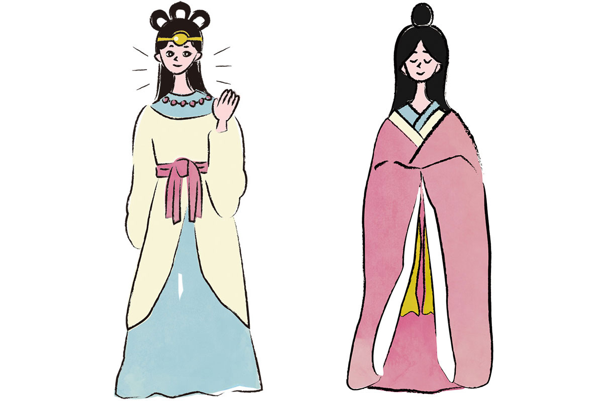
В святилище Исэ много больших и малых храмовых зданий, но два из них стоят особняком: Внутреннее святилище Найку, где почитают Аматэрасу, и Внешнее святилище Гэку, где почитают Тоёукэ. Оба называют главными, однако они не равны. Центр всего комплекса это Найку.
Тоёукэ-но омиками ещё называют «богиней, ведающей едой для богов». Сегодня ей молятся не только о еде, но и обо всём, что нужно для жизни: одежде, пище, крове, а ещё о делах и ремёслах. Аматэрасу-омиками правит небесным миром и солнцем. Её младшие братья это Сусаноо и Цукуёми, а её внук Ниниги, по «Кодзики» и «Нихон сёки», спустился на землю и стал предком японских императоров.
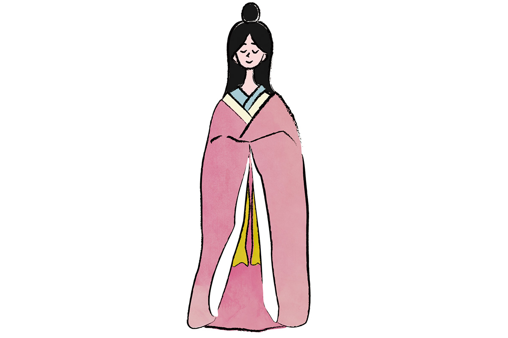
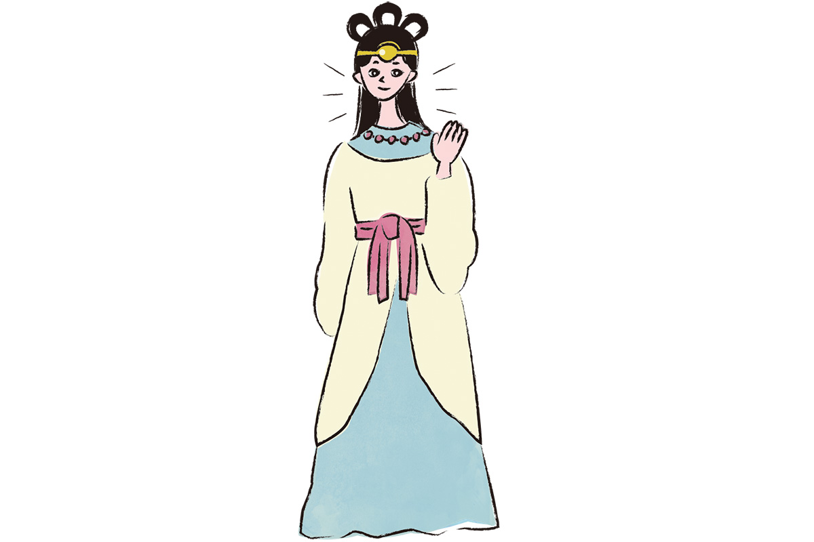
Вопросы
Что стоит знать до поездки
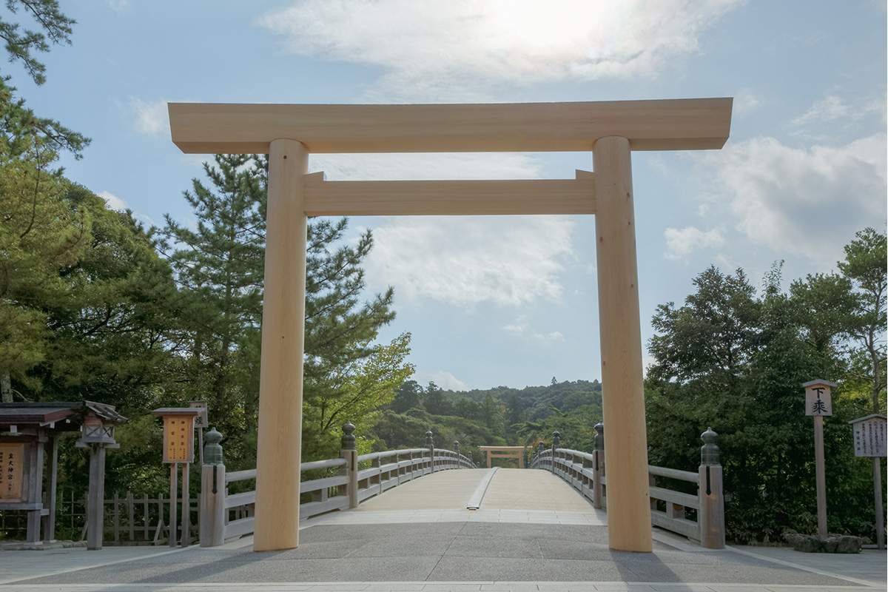
Правда ли, что официально оно называется просто «Дзингу»?
Да. Все говорят «Исэ-дзингу», но официальное название святилища просто «Дзингу». Так называют часть святилищ, где почитают предков императорской семьи и богов, которые помогли объединить страну; нынешние названия закрепились после 1868 года. В «Нихон сёки» словом «дзингу» названы только Исэ и Исоноками-дзингу, а в эпоху Эдо его носили лишь Исэ, Касима-дзингу и Катори-дзингу.
Почему без «Исэ»? Считается, что это святилище единственное в своём роде и стоит в центре всех остальных, а значит, хранит не один край, а всю Японию.
Сколько здесь святилищ?
Кроме Гэку и Найку, есть 14 «отдельных святилищ», 43 малых святилища из древнего свода «Энги-сики», 24 ещё меньших из «Энряку гисикитё», описания обрядов Исэ, и 42 святилища, которые подчиняются главным и отдельным. Всего 125, и все вместе они тоже называются «Дзингу».
Откуда тут куры?
На большие праздники, например осенний Каннамэ-сай, богам подносят рис с полей святилища, сакэ, овощи, морское ушко и рыбу, а также горных и водоплавающих птиц. На обрядах переноса святилища в жертву приносят и живых кур, а потом их выпускают. Так что куры, которые бродят по территории, это подношение богам и священные птицы.
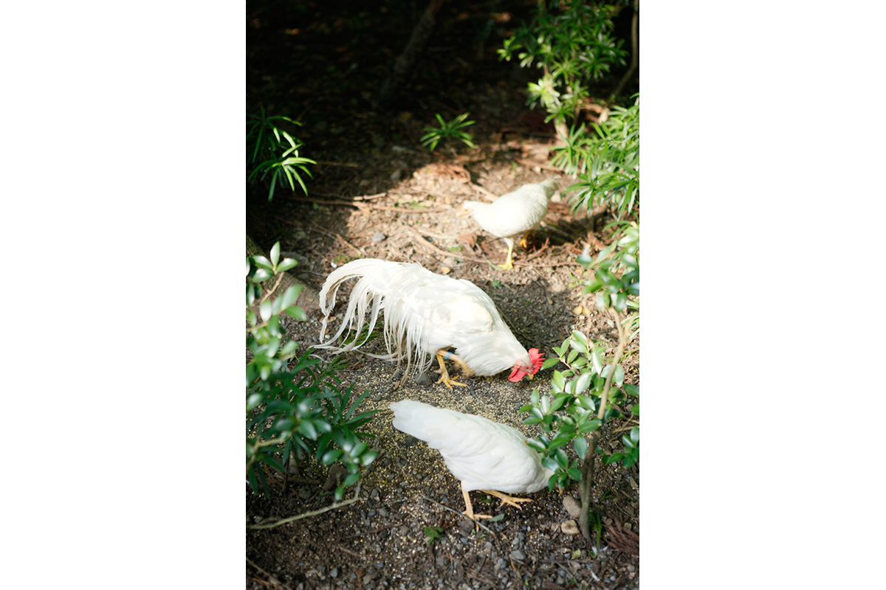
Что такое «тайма»?
Так называют оберег-табличку святилища. Её можно получить прямо в зале Кагурадэн, а ещё каждый год в конце года табличку Аматэрасу через местные святилища рассылают по домам всей страны, чтобы молиться ей можно было и дома. Каждую делают вручную из отобранных материалов, и на одну уходит несколько дней.
Что хранится в главном святилище?
Священный предмет Аматэрасу это зеркало Ята-но кагами, одна из трёх императорских регалий вместе с яшмой Ясакани-но магатама и мечом Кусанаги-но цуруги. При императоре Судзине зеркало перенесли в Касануи, а при Суйнине Ямато-химэ принесла его на нынешнее место.
Почему главные здания похожи на амбары?
Главные залы Гэку и Найку построены в стиле юйицу синмэй-дзукури. Синмэй-дзукури, как считается, выросли из амбаров на сваях эпохи Яёй: сначала в них хранили драгоценный рис, потом святыни. В этом стиле построены и отдельные, и малые святилища, так что обращайте на них внимание. Кстати, домашние алтари камидана в японских домах тоже чаще всего повторяют эту форму.
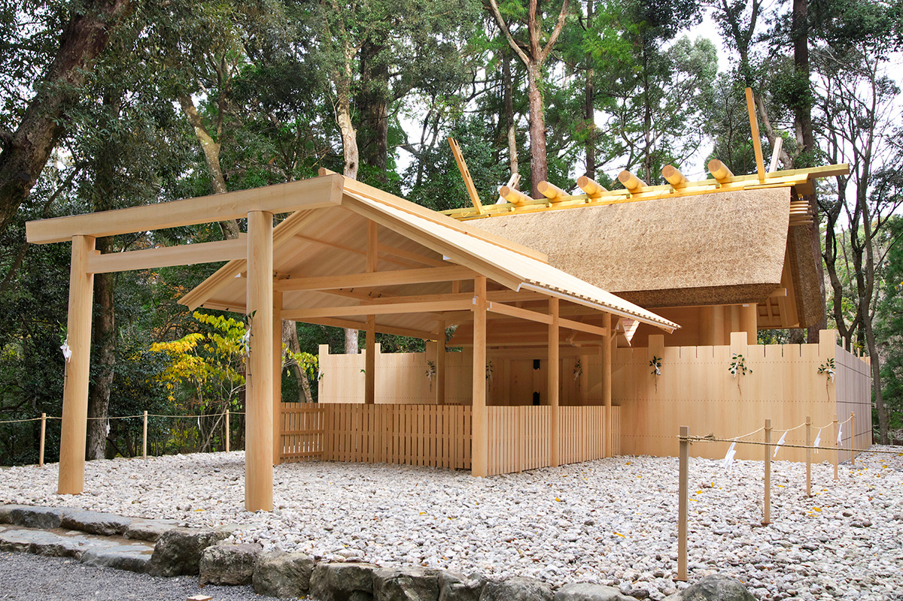
Почему здесь нет ящиков для монет и гаданий омикудзи?
В Исэ действовал запрет «сихэй киндан»: частные подношения запрещались, приносить дары мог только император. Монета в ящике тоже частное подношение, поэтому ящиков нет. С гаданиями та же логика: жребий изначально тянули, чтобы узнать волю богов о важных решениях, праздниках и делах государства. Спрашивать о личной удаче святилище, которое хранит всю Японию, считается неуместным.
Как молиться
Четыре правила
Сначала Гэку, потом Найку. Так принято. Святилища стоят в 5 км друг от друга, удобнее всего ехать на автобусе. Смотреть есть что, поэтому лучше отвести на них целый день.
Во Внешнем святилище держитесь левой стороны, во Внутреннем правой. Это касается пути к главным залам. Перед тории, входя и выходя, хорошо слегка поклониться.
Два поклона, два хлопка, один поклон. Сначала дважды глубоко поклонитесь, сложите ладони, чуть сдвиньте правую назад и дважды хлопните. В конце ещё один глубокий поклон. В Идзумо-тайся, например, хлопают четыре раза.
Молебны бывают двух видов. «Микэ» это обычный молебен минут на 15, после него дают табличку-оберег и угощение с алтаря. На «дайдай-кагура» после очищения богам исполняют танец под музыку, это занимает от 25 до 40 минут.
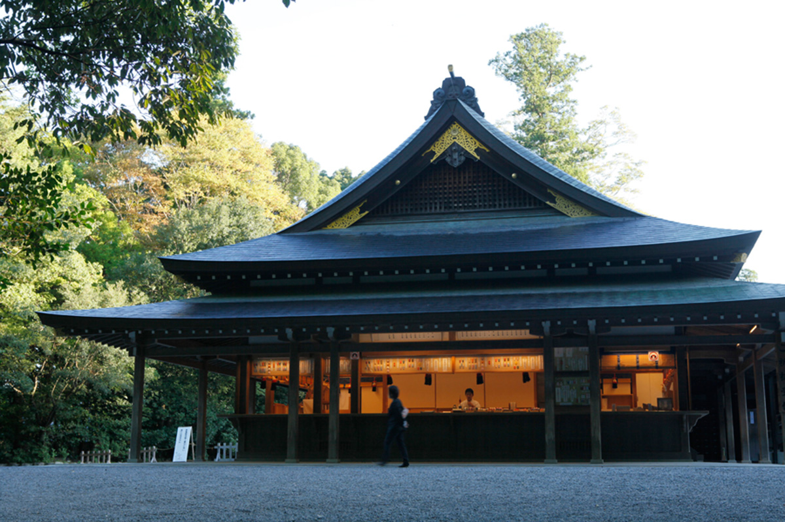
Святилище Исэ (Исэ-дзингу), Внутреннее святилище Найку
- Адрес
- префектура Миэ, Исэ, Удзитати-тё, 1
- Телефон
- +81 596-24-1111 (управление святилища)
- Сайт
- isejingu.or.jp
Гэку
Внешнее святилище: ветер, земля и священный конь
В святилище Исэ кроме главных залов много мест, которые легко пропустить. Почти все они сохраняют свою древнюю роль: в Гэку, например, есть святилища богов погоды и земли, построенные, чтобы урожай рос без бед.
Святилище Кадзэ-но мия стоит слева у подножия каменной лестницы, ведущей к святилищу Така-но мия. Его построили с молитвой, чтобы ураганы и ливни не губили посевы.
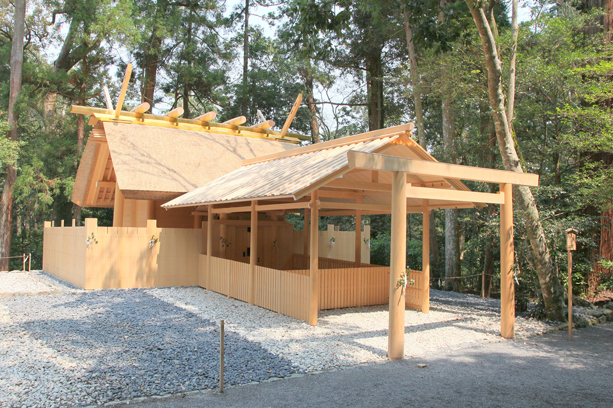
Справа от той же лестницы стоит Цути-но мия. Здесь почитают Оцути-но миоя-но ками, бога земли, которому молились в этих местах ещё до того, как сюда пришла Тоёукэ.
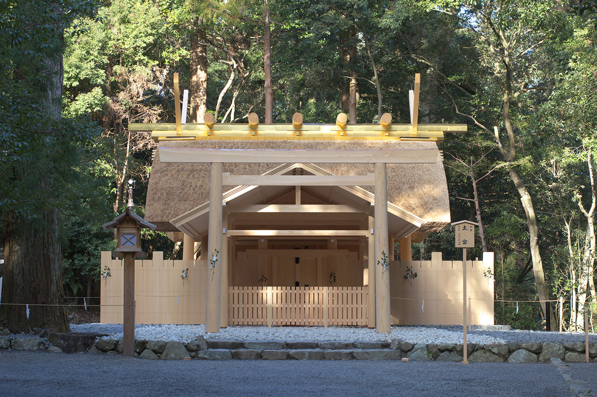
В Гэку есть и конюшня Миумая. В ней держат священных коней, которых дарит святилищу императорская семья.
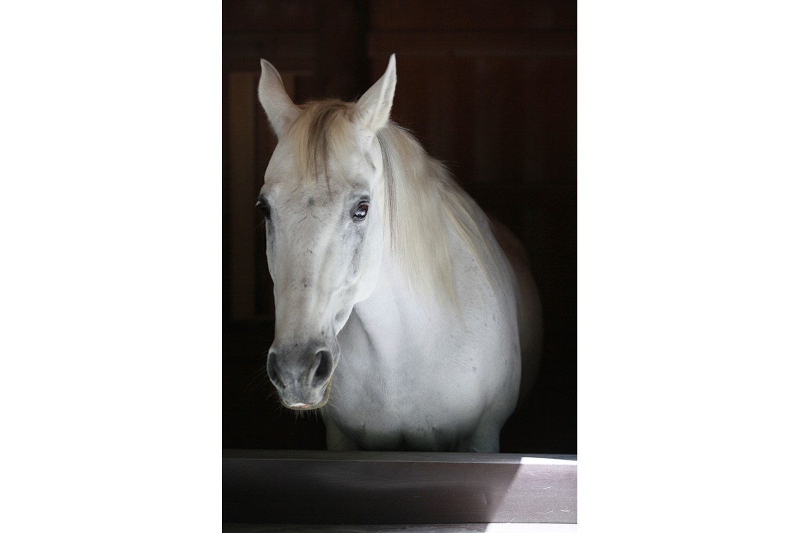
Найку
Внутреннее святилище: мост, зал танцев и второе по значению святилище
Перейдя мост Кадзахиноми-но мия, попадаешь к святилищу Кадзахиноми-но мия. Здесь почитают бога ветра и дождя, а раз от ветра и дождя зависит урожай, обряды в нём проводят почти как в главном святилище.
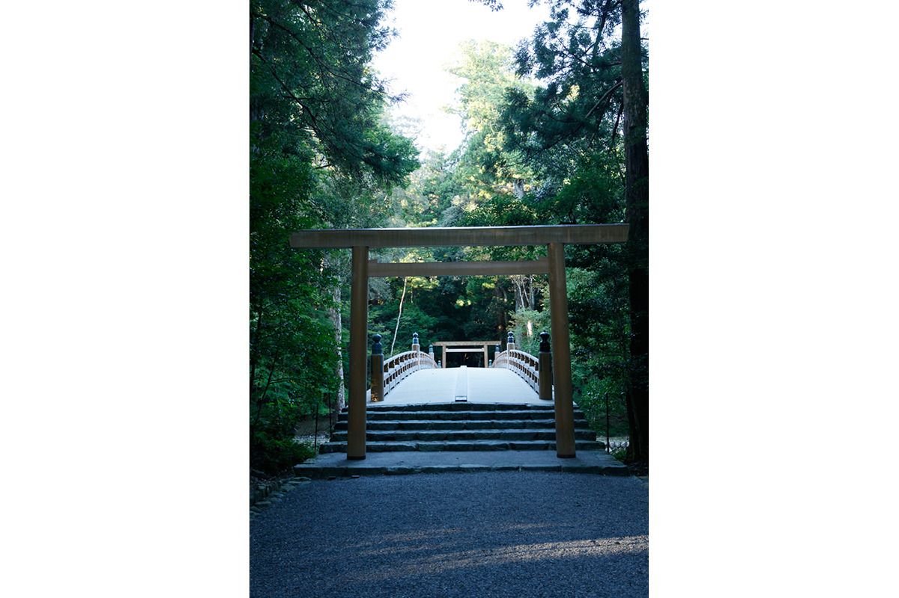
Кагурадэн, зал с крышей в стиле иримоя, служит для танцев и подношений богам. Здесь же заказывают молебны: в 2020 году их принимали каждый день с 8:30 до 16:00.
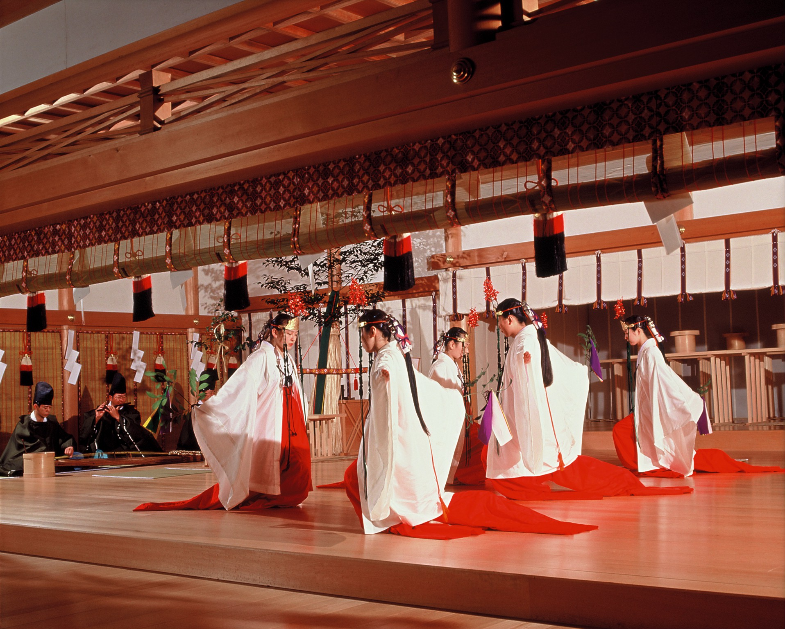
Арамацури-но мия уступает размером только главному святилищу. Это здание в стиле синмэй-дзукури с шестью брёвнами кацуоги на крыше, и среди отдельных святилищ Найку оно стоит первым. На праздниках сюда сразу после главного святилища приходят посланник императора, верховный жрец и остальные священники.
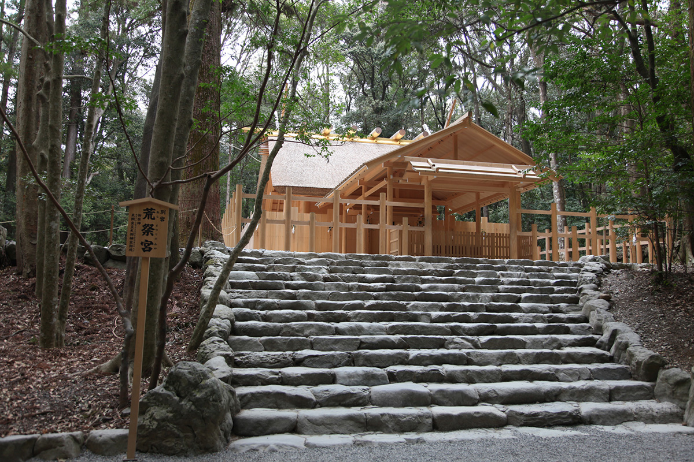
Вокруг
Ещё четыре святилища
До или после двух главных святилищ стоит прогуляться к отдельным святилищам и соседним храмам: у каждого своё настроение.
Ямато-химэ-но мия
Здесь почитают саму Ямато-химэ. Святилище освятили в 1923 году, по меркам Исэ оно совсем молодое.
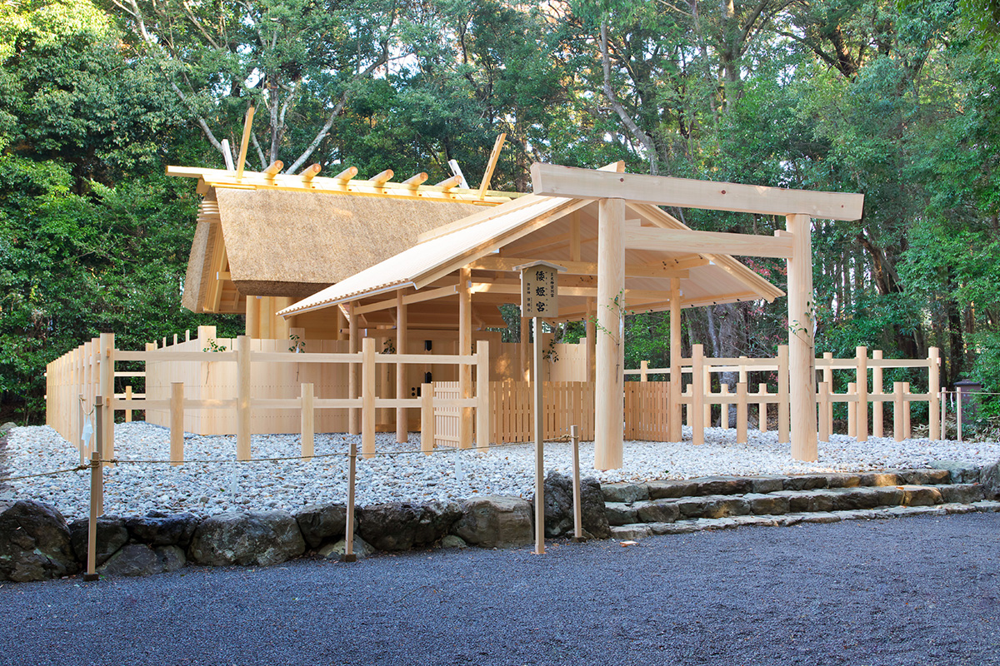
Ямато-химэ-но мия
- Адрес
- префектура Миэ, Исэ, Кусубэ-тё, 5
- Телефон
- +81 596-24-1111 (управление святилища Исэ)
Святилище Сарутахико
Главный бог здесь Сарутахико-но оками, который, по мифу, показывал дорогу внуку богини солнца, когда тот спускался с небес на землю. Поэтому ему молятся как богу-проводнику, который помогает найти верный путь.
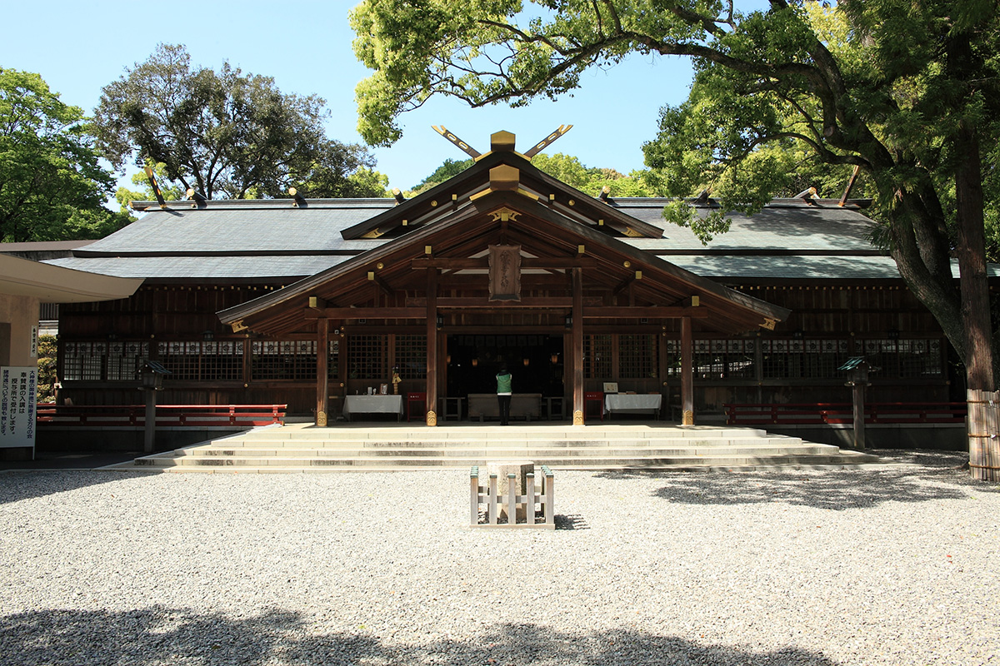
Святилище Сарутахико
- Адрес
- префектура Миэ, Исэ, Удзи-Урата, 2-1-10
- Телефон
- +81 596-22-2554
Святилище Футами-окитама
Здесь тоже почитают Сарутахико-но оками. Святилище стоит на берегу в Футами, у знаменитых скал Мэото-ива, «супружеских скал», связанных толстой верёвкой. Примерно в 700 метрах от них под водой лежит священный камень Окитама.
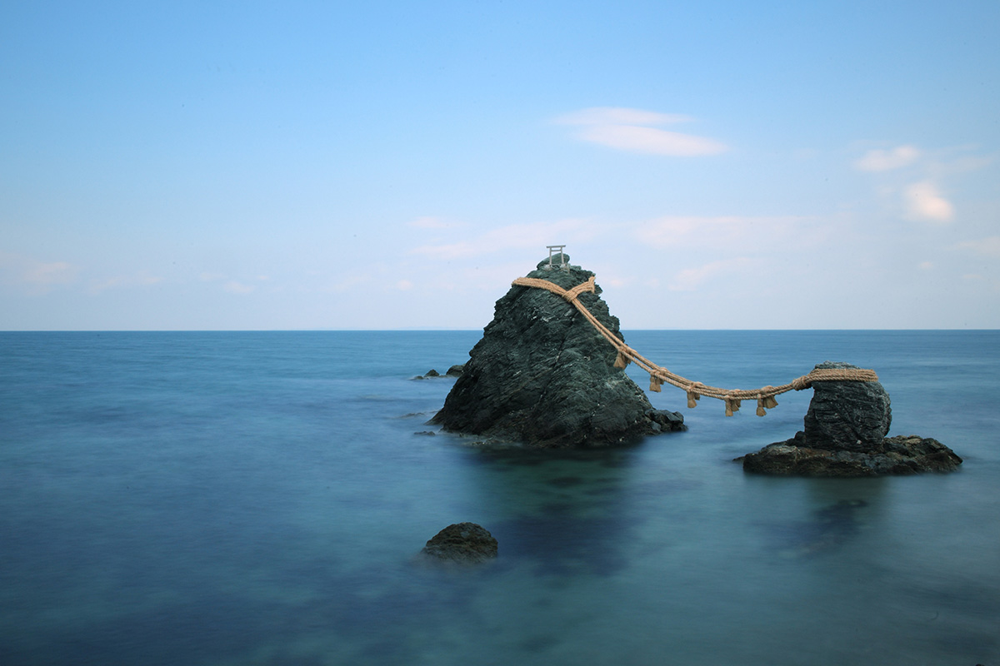
Святилище Футами-окитама
- Адрес
- префектура Миэ, Исэ, Футами-тё, Э, 575
- Телефон
- +81 596-43-2020
Цукиёми-но мия
Отдельное святилище Найку, посвящённое Цукуёми, богу луны и младшему брату Аматэрасу. Оно стоит в лесу.
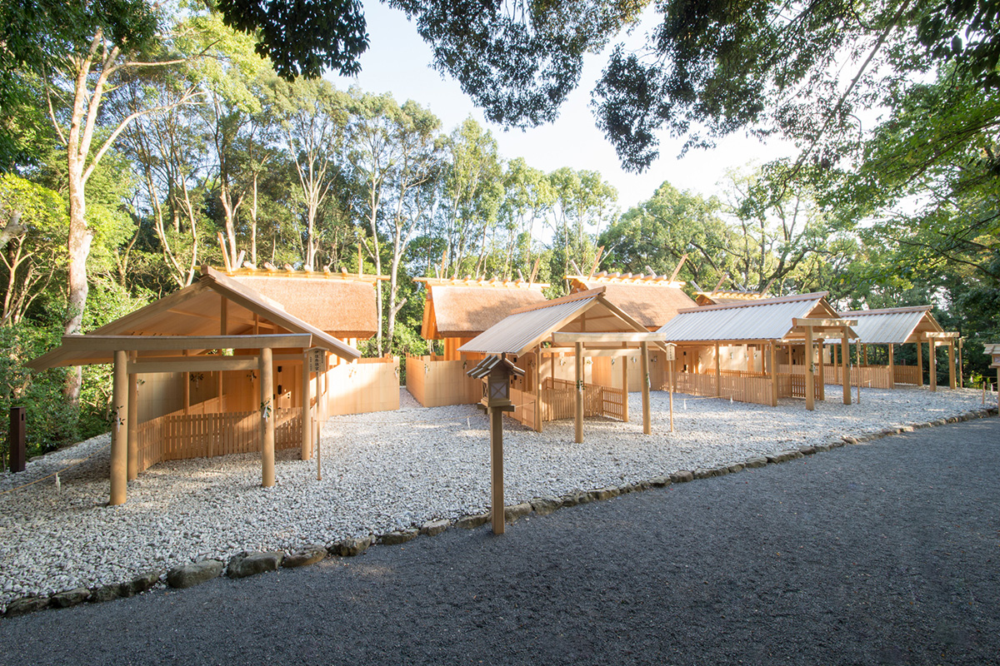
Цукиёми-но мия
- Адрес
- префектура Миэ, Исэ, Накамура-тё, 742-1
- Телефон
- +81 596-24-1111 (управление святилища Исэ)
Фото: Харуми Обама, Ко Мияди, Харуо Накано, Цутому Ватанабэ.